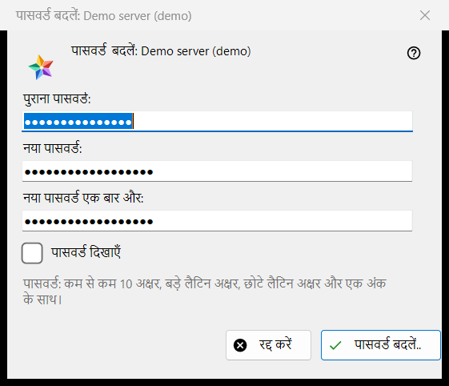
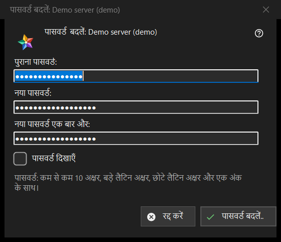

पासवर्ड बदलें
यह किस लिए है
एक्सचेंज सर्वर पर आपके खाते का पासवर्ड बदलता है। यह संसाधन सूची के मेरे डिवाइस अनुभाग में सर्वर प्रविष्टि के पासवर्ड बदलें.. बटन से खुलता है; वह बटन तब तक दिखता है जब तक वह सर्वर ऑनलाइन है। शीर्षक में खाते का नाम होता है।


इस क्रम में
- पुराना पासवर्ड टाइप करें।
- नया पासवर्ड दो बार टाइप करें।
- पासवर्ड बदलें.. दबाएँ; रद्द करें विंडो बंद कर देता है और कुछ नहीं भेजता।
तत्व
तीन फ़ील्ड
पुराना पासवर्ड, नया पासवर्ड और नया पासवर्ड एक बार और; पासवर्ड दिखाएँ उन्हें दिखा देता है। विंडो बंद होने पर बॉक्स मिटा दिए जाते हैं। विंडो केवल पासवर्ड इकट्ठा करती है: व्यूअर उन्हें उस प्रविष्टि के कनेक्शन से सर्वर को भेजता है।
पासवर्ड नियम
नोट कहता है: कम से कम 10 वर्ण, एक बड़ा और एक छोटा लैटिन अक्षर और एक अंक। विंडो कुछ भी भेजने से पहले यह जाँचती है और जो हिस्सा विफल है उसका नाम बताती है, जैसे (पासवर्ड 10 अक्षरों से छोटा है।) या (पासवर्ड में कोई अंक नहीं है।); वह (पुराना पासवर्ड दें।) और (दोनों पासवर्ड एक नहीं हैं।) भी कहती है। सर्वर वही नियम लागू करता है और अंतिम निर्णय उसका है।
बदलाव के बाद
सफल होने पर स्थिति कहती है: पासवर्ड बदल गया। यह कंप्यूटर काम करता रहेगा, और खाते के दूसरे डिवाइस को फिर से साइन-इन करना होगा। इनकार के कारण: पुराना पासवर्ड मेल नहीं खाया; बहुत ज़्यादा प्रयास (एक मिनट रुकें और दोहराएँ); सर्वर ने बदलाव अस्वीकार किया; सर्वर से कनेक्शन नहीं है (कनेक्ट करें और दोहराएँ)।